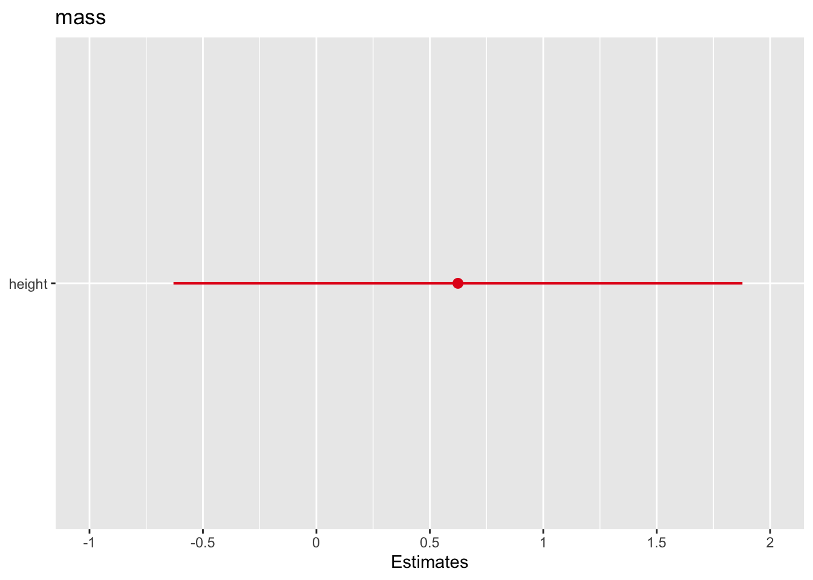
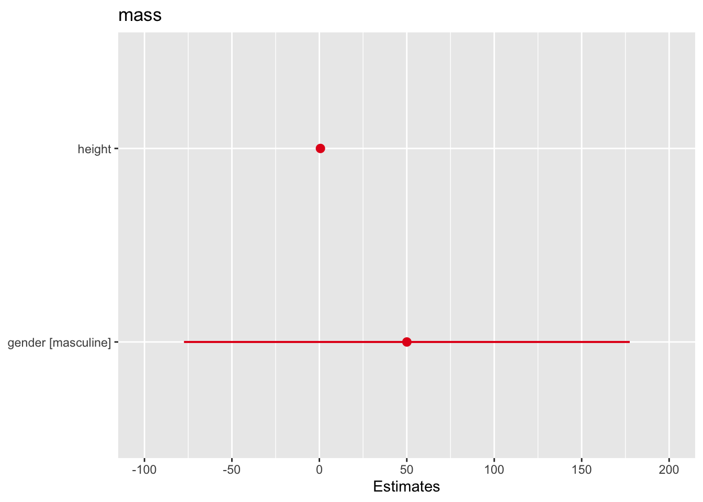
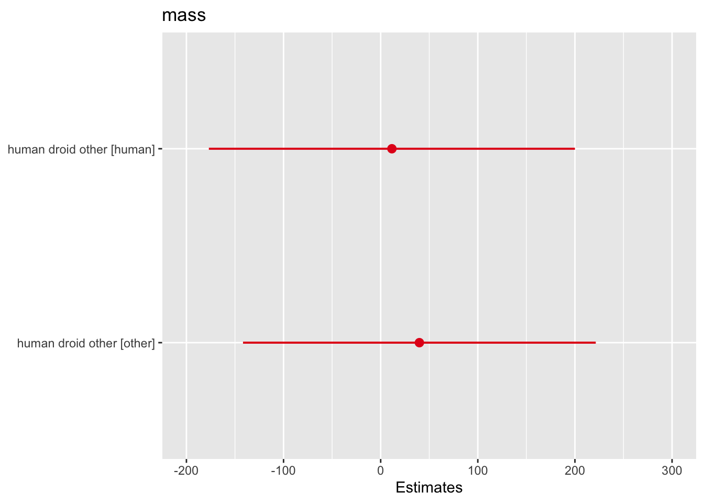
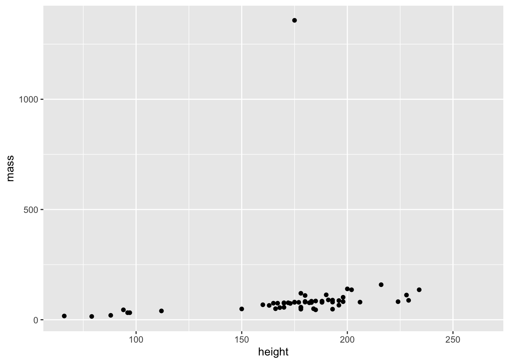
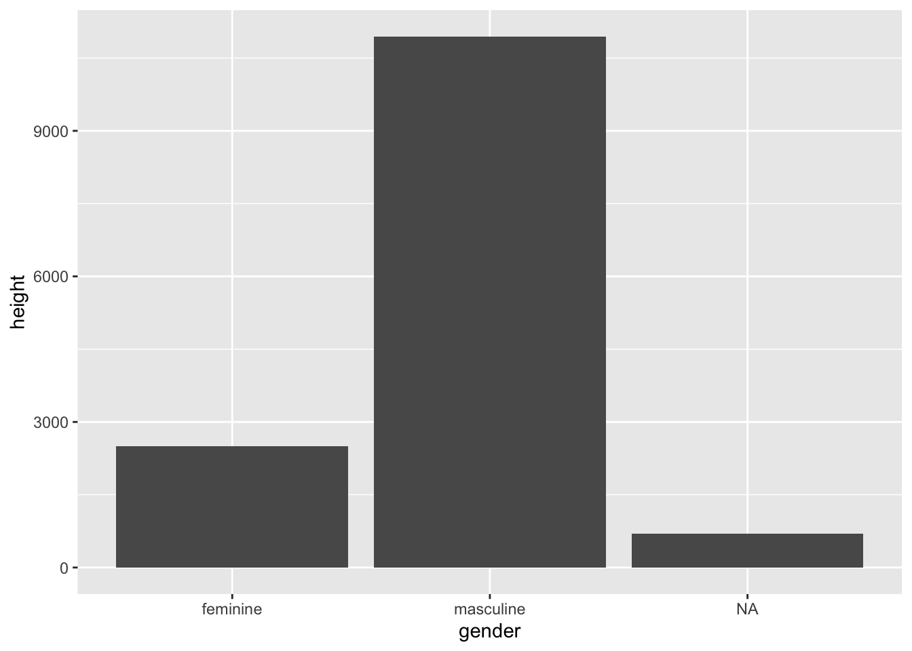
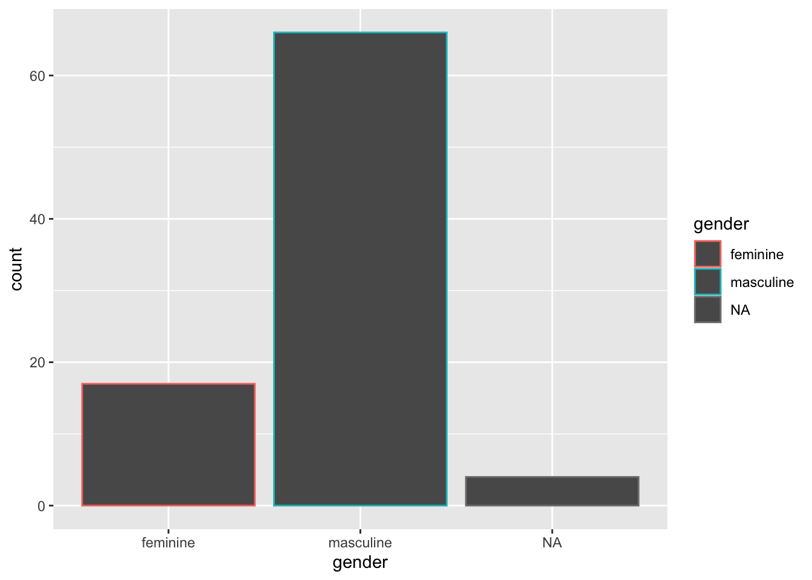
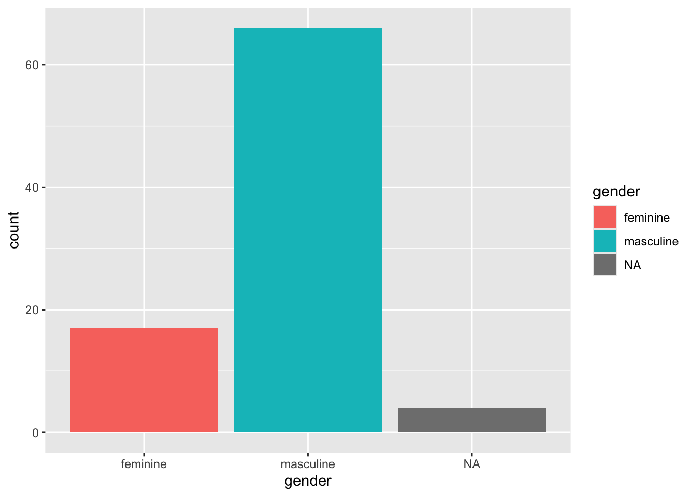
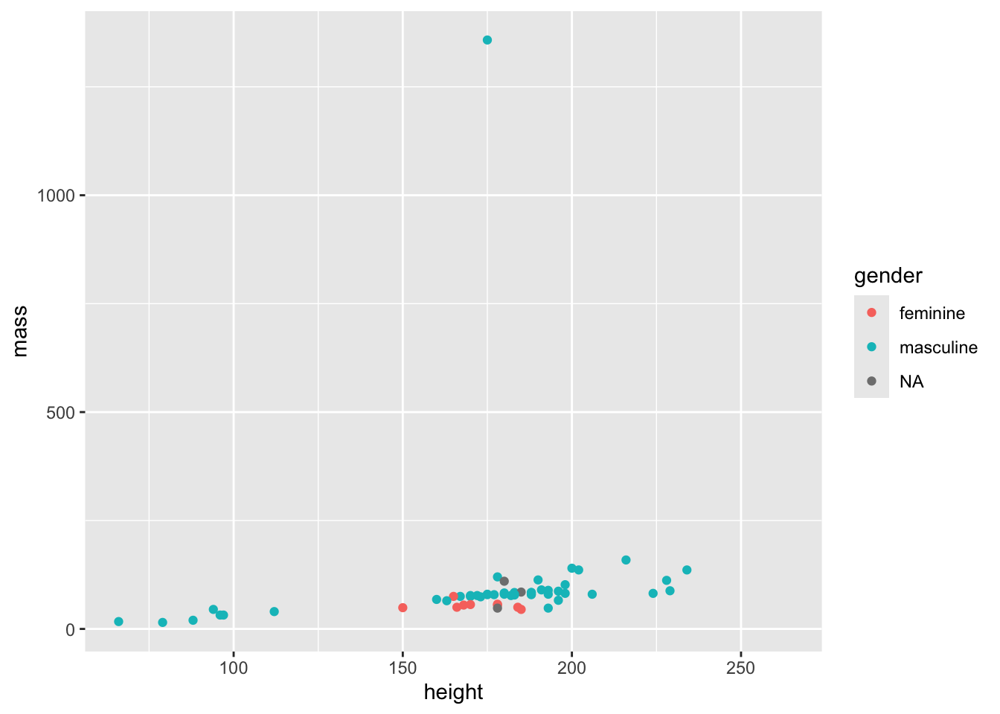
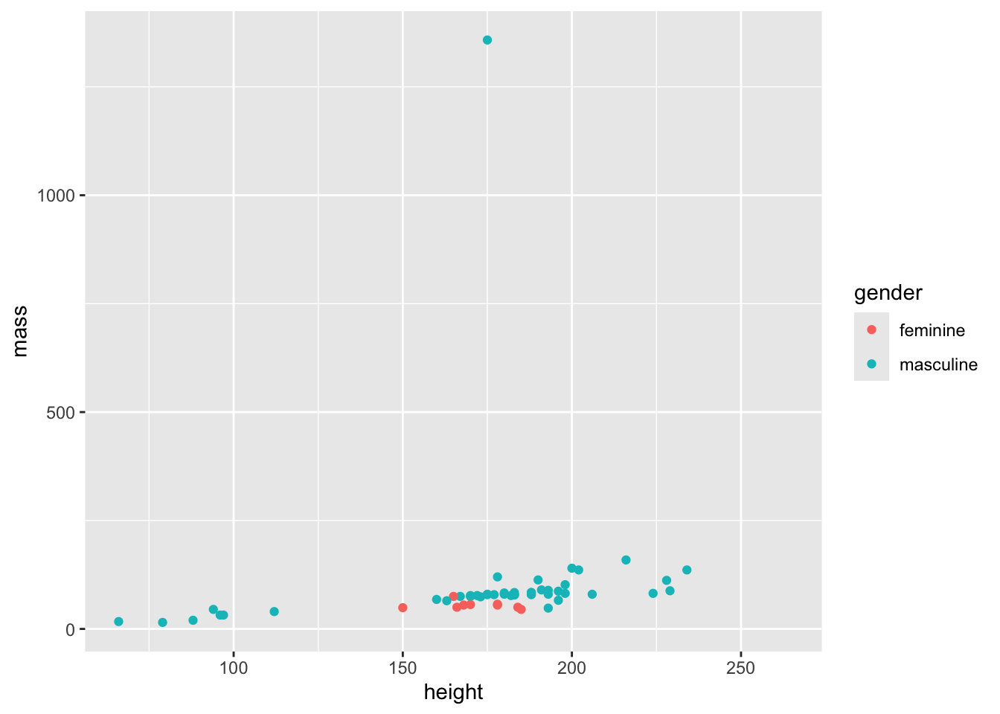

# example 1: creating a variable that contains the result of addition
my_addition <- 35 + 24
print(my_addition)[1] 59# example 2: creating a variable that stores a string (text)
favourite_fruit <- "peach"
print(favourite_fruit)[1] "peach"This document is a pared-down version of the part1.R and part2.R files, intended for a shorter workshop. There is no new content, just a light reorganization to focus less on basic data structures and more on getting up and running using packages and conducting analyses, intended to be delivered as a single 90-minute workshop.
These materials serve as a quick introduction. There are many excellent resources for learning R online. Two I will draw your attention to are (1) R for Data Science by Hadley Wickham, Mine Çetinkaya-Rundel, and Garrett Grolemund, an excellent resource to learn a great deal of R, and (2) the R Graph Gallery curated by Yan Holtz, which shows examples of all kinds of graphs and how to code them.
dplyr, sjPlothead(), tail(), str(), View()dplyr verbs: filter(), select(), mutate(), group_by(), arrange()ggplot2We code to accomplish tasks that would be less efficient or impossible to do by hand. There are many different coding languages. Which one you use depends on the task at hand and the conventions of a given field. A lot of programming languages are flexible and can do a lot, but have different things that they excel at. I like to think of coding languages as being like utensils: they help us accomplish a task, and there are a lot of options, but some utensils are better at some jobs (e.g., spoon vs fork for eating soup).
We’re going to focus on R because that’s a common option in psychological research. Why do people like using R/what makes it well-suited to psychological research? (1) It’s open-source and free, meaning users like you and me can add additional functionality on top of base R, and it’s free for anyone to use. (2) It has an active teaching community, so a lot of great resources for learning are freely available online. (3) Particularly thanks to Posit/RStudio, it’s easy to set up projects and keep files organized. (4) It’s excellent at statistical analyses and graphing.
Some other options you may come across are SPSS and JASP, which are “point and click.” These are powerful tools and can be totally fine for conducting analyses! They’re just a little less flexible because you’re limited to their existing functionality. They can also be less reproducible, with people clicking around and not saving their work. There are ways to save your work, which you should do if you’re using them.
It’s important to keep files clean and organized when you’re working on a project. I like to create folders dedicated to a given project, and then keep all files and data related to that project in a given folder. Let’s create a folder for these workshops. Go to File -> New Project… -> New Directory -> New Project. Create a directory (AKA a folder) and choose where to put it, and click Create Project. This is where your files for these workshops will live! Let’s make a file called intro_to_R.R (ctrl/cmd-shift-N or File -> New File -> R Script) for today’s activities.
It’s important to keep track of where your files “live” for a given project, as that makes it easier to find your work and have different components interact (e.g., loading a data file in a given script).
Important things in RStudio to start: we have the console (runs code, doesn’t save the code anywhere permanent), environment (shows all the objects you’ve created, right now we have none), and then the files/plots/help window. When you create a file, you also add a script editor.
R is a flexible language that can perform a lot of tasks, from basic arithmetic up through advanced statistics analyses and graphing. It is often the case that we want to save the results of some work, either to use later on or just to save us from having to re-run things repeatedly. We can save results to a variable using the assignment operator, <- . I don’t want to get into the nitty-gritty, but <- is convention when you’re assigning values to variables, and = is typically used for function parameter definitions. Most important is that you are consistent.
# example 1: creating a variable that contains the result of addition
my_addition <- 35 + 24
print(my_addition)[1] 59# example 2: creating a variable that stores a string (text)
favourite_fruit <- "peach"
print(favourite_fruit)[1] "peach"Let’s take a moment here to talk about some coding best practices: commenting and spacing.
I’m using comments in two ways right now: inline (next to code), and to create sections. Inline, I’m commenting with what I’m doing. This is not just to make it easier for others to read, it’s for myself! You know what you’re doing when you write your code, but when you come back days, weeks, months, years later, you won’t always remember, so it’s useful to have a quick description of what is happening and why. As an additional benefit, it can help people reading your code for the first time as well. With creating sections, I’m organizing my file so it’s easy to navigate with a legend. These lines with a preceding # are comments, so won’t be run when I run my code. If you follow up a comment with at least four hyphens (# —-), you create a new section. I have a ton of hyphens following my comment because it makes it easier to pick out sections when I scroll through the document, and it’s the default of the automatic section creation function in R, which is ctrl-shift-R on a Mac.
Notice that I’m spacing out everything. I have a space around the assignment operator <-, spaces between the addition/subtraction/multiplication/division sign and the numbers. This is because it’s easier to read. For example, if I write:
2+2-1*8/3[1] 1.333333It is harder to read than:
2 + 2 - 1 * 8 / 3[1] 1.333333This is less noticeable with smaller lines like this, but when you have a bunch of text all at once, it’s very noticeable when it’s hard to read.
R can store more than single values at once! It can also store multiple elements together, for example the grades in a class or groceries:
grades <- c(88, 89, 85, 91)
print(grades)[1] 88 89 85 91groceries <- c("cereal", "milk", "bananas", "dragonfruit", "chicken", "basil")
print(groceries)[1] "cereal" "milk" "bananas" "dragonfruit" "chicken"
[6] "basil" This is very useful for thinking about your data, which is basically a bunch of column vectors (i.e., vectors that are vertically arranged) pushed together. You can index the elements of a vector to see what is stored. In R, indexing starts at 1 (unlike, e.g., Python where the first position is indexed to 0). So to access the value “bananas” from the groceries vector:
groceries[3][1] "bananas"A vector can only be one data type (integers, doubles [decimal numbers], strings). If you try to put multiple types into one list, the data will be coerced into a common type. For example, grocery items and how many of each to get:
groceries_numbered <- c("cereal", 1, "milk", 1, "bananas", 7, "dragonfruit", 2, "chicken", 1, "basil", 20)
print(groceries_numbered) # all entries coerced to strings [1] "cereal" "1" "milk" "1" "bananas"
[6] "7" "dragonfruit" "2" "chicken" "1"
[11] "basil" "20" Lists, on the other hand (not vectors), can contain multiple types:
groceries_list <- list("cereal", 1, "milk", 1, "bananas", 7)
groceries_list[[1]]
[1] "cereal"
[[2]]
[1] 1
[[3]]
[1] "milk"
[[4]]
[1] 1
[[5]]
[1] "bananas"
[[6]]
[1] 7Effective use of a programming language involves using the power of functions. We have already seen some functions, like c() (combine or concatenate vectors), print() (print something to the console), list() (create a list). Functions involve three basic ingredients:
As a metaphor, think of the function of an oven.
When you use an oven, you always put in something you want heated, the oven gets hot (to different degrees, which you can specify depending on what you’re putting in it), and it returns the input, but hotter! Functions in programming work like this, too. They take some input, do some action, return some output. For example, the sum() function:
You can write your own functions as follows:
function_name <- function(variables_for_function) {
# action
# return
}
# here is a fake oven function:
code_oven <- function(food1, food2) {
print("Cooking the foods!")
finished_food <- c(food1, "and", food2)
return(finished_food)
}
code_oven("chicken", "rice")[1] "Cooking the foods!"[1] "chicken" "and" "rice" You can use existing functions in base R or create your own functions, and you can also use functions written by other people. Recall that R is open-source, meaning anyone can write functions that can be freely used by other people. It’s like Wikipedia in that anyone can write something, but there are editors who check that edits make sense. When people publish their functions to be used by others, those functions are contained in packages. To use a package and the functions therein, you need to (1) install the package, (2) attach the package to your R session (what we have open right now is an R session).
You only need to install the package once (or when it is updated), but you need to attach it to every session you want to use it in. It’s like any other software: you need to download Google Chrome once to have it on your computer (and sometimes you need to redownload to update it), but every time you want to use it you have to open it.
Note that I usually put ALL packages I’ll be using at the very top of the document, along with the data I’ll be using.
# to install, need to do this once
# install.packages("dplyr") # you need the quotation marks
# install.packages("sjPlot")
# to attach to your session, need to do this every session
library(dplyr)
Attaching package: 'dplyr'The following objects are masked from 'package:stats':
filter, lagThe following objects are masked from 'package:base':
intersect, setdiff, setequal, unionlibrary("dplyr") # you can use quotation marks or not when attaching
library(sjPlot)Warning: package 'sjPlot' was built under R version 4.4.1#refugeeswelcomedplyr stands for “data pliers,” and is used for manipulating data. Let’s look at some example datasets included in the dplyr package, starting with mtcars. This has information about cars’ fuel consumption. We will use sjPlot later, when we are presenting the results of our statistical analyses.
It is usually a good idea to look over your data when you read it in. Reasons include (1) familiarizing yourself with its structure, (2) briefly checking it read in correctly.
The mtcars dataset is included in dplyr, which we’ve loaded, so it’s already available to us. A few useful functions for looking at your data in R:
head(mtcars) # look at the first few rows mpg cyl disp hp drat wt qsec vs am gear carb
Mazda RX4 21.0 6 160 110 3.90 2.620 16.46 0 1 4 4
Mazda RX4 Wag 21.0 6 160 110 3.90 2.875 17.02 0 1 4 4
Datsun 710 22.8 4 108 93 3.85 2.320 18.61 1 1 4 1
Hornet 4 Drive 21.4 6 258 110 3.08 3.215 19.44 1 0 3 1
Hornet Sportabout 18.7 8 360 175 3.15 3.440 17.02 0 0 3 2
Valiant 18.1 6 225 105 2.76 3.460 20.22 1 0 3 1tail(mtcars) # look at the last few rows mpg cyl disp hp drat wt qsec vs am gear carb
Porsche 914-2 26.0 4 120.3 91 4.43 2.140 16.7 0 1 5 2
Lotus Europa 30.4 4 95.1 113 3.77 1.513 16.9 1 1 5 2
Ford Pantera L 15.8 8 351.0 264 4.22 3.170 14.5 0 1 5 4
Ferrari Dino 19.7 6 145.0 175 3.62 2.770 15.5 0 1 5 6
Maserati Bora 15.0 8 301.0 335 3.54 3.570 14.6 0 1 5 8
Volvo 142E 21.4 4 121.0 109 4.11 2.780 18.6 1 1 4 2summary(mtcars) # get an overview of values mpg cyl disp hp
Min. :10.40 Min. :4.000 Min. : 71.1 Min. : 52.0
1st Qu.:15.43 1st Qu.:4.000 1st Qu.:120.8 1st Qu.: 96.5
Median :19.20 Median :6.000 Median :196.3 Median :123.0
Mean :20.09 Mean :6.188 Mean :230.7 Mean :146.7
3rd Qu.:22.80 3rd Qu.:8.000 3rd Qu.:326.0 3rd Qu.:180.0
Max. :33.90 Max. :8.000 Max. :472.0 Max. :335.0
drat wt qsec vs
Min. :2.760 Min. :1.513 Min. :14.50 Min. :0.0000
1st Qu.:3.080 1st Qu.:2.581 1st Qu.:16.89 1st Qu.:0.0000
Median :3.695 Median :3.325 Median :17.71 Median :0.0000
Mean :3.597 Mean :3.217 Mean :17.85 Mean :0.4375
3rd Qu.:3.920 3rd Qu.:3.610 3rd Qu.:18.90 3rd Qu.:1.0000
Max. :4.930 Max. :5.424 Max. :22.90 Max. :1.0000
am gear carb
Min. :0.0000 Min. :3.000 Min. :1.000
1st Qu.:0.0000 1st Qu.:3.000 1st Qu.:2.000
Median :0.0000 Median :4.000 Median :2.000
Mean :0.4062 Mean :3.688 Mean :2.812
3rd Qu.:1.0000 3rd Qu.:4.000 3rd Qu.:4.000
Max. :1.0000 Max. :5.000 Max. :8.000 str(mtcars) # overview of data types'data.frame': 32 obs. of 11 variables:
$ mpg : num 21 21 22.8 21.4 18.7 18.1 14.3 24.4 22.8 19.2 ...
$ cyl : num 6 6 4 6 8 6 8 4 4 6 ...
$ disp: num 160 160 108 258 360 ...
$ hp : num 110 110 93 110 175 105 245 62 95 123 ...
$ drat: num 3.9 3.9 3.85 3.08 3.15 2.76 3.21 3.69 3.92 3.92 ...
$ wt : num 2.62 2.88 2.32 3.21 3.44 ...
$ qsec: num 16.5 17 18.6 19.4 17 ...
$ vs : num 0 0 1 1 0 1 0 1 1 1 ...
$ am : num 1 1 1 0 0 0 0 0 0 0 ...
$ gear: num 4 4 4 3 3 3 3 4 4 4 ...
$ carb: num 4 4 1 1 2 1 4 2 2 4 ...View(mtcars) # view the entire datasetdplyrUnlike in Excel, you can’t access the data directly when Viewing it. Why? Because it’s better to change it using your code in a reproducible way (no wondering if values were changed, forgetting what was changed or moved, etc.), and that’s where dplyr comes in! It’s an R package used for data manipulation, with a few main functions: filter (choosing certain rows), select (choosing certain columns), mutate (adding/changing columns), arrange (order of rows), summarize (summarizing, as the name suggests).
Our dataset has information about cars’ number of cylinders. Generally, more cylinders = more power. We can use equality/relational statements to filter the dataset to cars that have more than/less than/equal to a certain number of cylinders.
filter(mtcars, cyl == 6) # equal to, notice the two == mpg cyl disp hp drat wt qsec vs am gear carb
Mazda RX4 21.0 6 160.0 110 3.90 2.620 16.46 0 1 4 4
Mazda RX4 Wag 21.0 6 160.0 110 3.90 2.875 17.02 0 1 4 4
Hornet 4 Drive 21.4 6 258.0 110 3.08 3.215 19.44 1 0 3 1
Valiant 18.1 6 225.0 105 2.76 3.460 20.22 1 0 3 1
Merc 280 19.2 6 167.6 123 3.92 3.440 18.30 1 0 4 4
Merc 280C 17.8 6 167.6 123 3.92 3.440 18.90 1 0 4 4
Ferrari Dino 19.7 6 145.0 175 3.62 2.770 15.50 0 1 5 6filter(mtcars, cyl < 6) # less than 6 mpg cyl disp hp drat wt qsec vs am gear carb
Datsun 710 22.8 4 108.0 93 3.85 2.320 18.61 1 1 4 1
Merc 240D 24.4 4 146.7 62 3.69 3.190 20.00 1 0 4 2
Merc 230 22.8 4 140.8 95 3.92 3.150 22.90 1 0 4 2
Fiat 128 32.4 4 78.7 66 4.08 2.200 19.47 1 1 4 1
Honda Civic 30.4 4 75.7 52 4.93 1.615 18.52 1 1 4 2
Toyota Corolla 33.9 4 71.1 65 4.22 1.835 19.90 1 1 4 1
Toyota Corona 21.5 4 120.1 97 3.70 2.465 20.01 1 0 3 1
Fiat X1-9 27.3 4 79.0 66 4.08 1.935 18.90 1 1 4 1
Porsche 914-2 26.0 4 120.3 91 4.43 2.140 16.70 0 1 5 2
Lotus Europa 30.4 4 95.1 113 3.77 1.513 16.90 1 1 5 2
Volvo 142E 21.4 4 121.0 109 4.11 2.780 18.60 1 1 4 2filter(mtcars, cyl > 6) # greater than 6 mpg cyl disp hp drat wt qsec vs am gear carb
Hornet Sportabout 18.7 8 360.0 175 3.15 3.440 17.02 0 0 3 2
Duster 360 14.3 8 360.0 245 3.21 3.570 15.84 0 0 3 4
Merc 450SE 16.4 8 275.8 180 3.07 4.070 17.40 0 0 3 3
Merc 450SL 17.3 8 275.8 180 3.07 3.730 17.60 0 0 3 3
Merc 450SLC 15.2 8 275.8 180 3.07 3.780 18.00 0 0 3 3
Cadillac Fleetwood 10.4 8 472.0 205 2.93 5.250 17.98 0 0 3 4
Lincoln Continental 10.4 8 460.0 215 3.00 5.424 17.82 0 0 3 4
Chrysler Imperial 14.7 8 440.0 230 3.23 5.345 17.42 0 0 3 4
Dodge Challenger 15.5 8 318.0 150 2.76 3.520 16.87 0 0 3 2
AMC Javelin 15.2 8 304.0 150 3.15 3.435 17.30 0 0 3 2
Camaro Z28 13.3 8 350.0 245 3.73 3.840 15.41 0 0 3 4
Pontiac Firebird 19.2 8 400.0 175 3.08 3.845 17.05 0 0 3 2
Ford Pantera L 15.8 8 351.0 264 4.22 3.170 14.50 0 1 5 4
Maserati Bora 15.0 8 301.0 335 3.54 3.570 14.60 0 1 5 8filter(mtcars, cyl <= 6) # less than or equal to mpg cyl disp hp drat wt qsec vs am gear carb
Mazda RX4 21.0 6 160.0 110 3.90 2.620 16.46 0 1 4 4
Mazda RX4 Wag 21.0 6 160.0 110 3.90 2.875 17.02 0 1 4 4
Datsun 710 22.8 4 108.0 93 3.85 2.320 18.61 1 1 4 1
Hornet 4 Drive 21.4 6 258.0 110 3.08 3.215 19.44 1 0 3 1
Valiant 18.1 6 225.0 105 2.76 3.460 20.22 1 0 3 1
Merc 240D 24.4 4 146.7 62 3.69 3.190 20.00 1 0 4 2
Merc 230 22.8 4 140.8 95 3.92 3.150 22.90 1 0 4 2
Merc 280 19.2 6 167.6 123 3.92 3.440 18.30 1 0 4 4
Merc 280C 17.8 6 167.6 123 3.92 3.440 18.90 1 0 4 4
Fiat 128 32.4 4 78.7 66 4.08 2.200 19.47 1 1 4 1
Honda Civic 30.4 4 75.7 52 4.93 1.615 18.52 1 1 4 2
Toyota Corolla 33.9 4 71.1 65 4.22 1.835 19.90 1 1 4 1
Toyota Corona 21.5 4 120.1 97 3.70 2.465 20.01 1 0 3 1
Fiat X1-9 27.3 4 79.0 66 4.08 1.935 18.90 1 1 4 1
Porsche 914-2 26.0 4 120.3 91 4.43 2.140 16.70 0 1 5 2
Lotus Europa 30.4 4 95.1 113 3.77 1.513 16.90 1 1 5 2
Ferrari Dino 19.7 6 145.0 175 3.62 2.770 15.50 0 1 5 6
Volvo 142E 21.4 4 121.0 109 4.11 2.780 18.60 1 1 4 2Take cyl == 6. We can see that there are 7 rows. But if we call mtcars, it’s still the full dataset.
mtcars mpg cyl disp hp drat wt qsec vs am gear carb
Mazda RX4 21.0 6 160.0 110 3.90 2.620 16.46 0 1 4 4
Mazda RX4 Wag 21.0 6 160.0 110 3.90 2.875 17.02 0 1 4 4
Datsun 710 22.8 4 108.0 93 3.85 2.320 18.61 1 1 4 1
Hornet 4 Drive 21.4 6 258.0 110 3.08 3.215 19.44 1 0 3 1
Hornet Sportabout 18.7 8 360.0 175 3.15 3.440 17.02 0 0 3 2
Valiant 18.1 6 225.0 105 2.76 3.460 20.22 1 0 3 1
Duster 360 14.3 8 360.0 245 3.21 3.570 15.84 0 0 3 4
Merc 240D 24.4 4 146.7 62 3.69 3.190 20.00 1 0 4 2
Merc 230 22.8 4 140.8 95 3.92 3.150 22.90 1 0 4 2
Merc 280 19.2 6 167.6 123 3.92 3.440 18.30 1 0 4 4
Merc 280C 17.8 6 167.6 123 3.92 3.440 18.90 1 0 4 4
Merc 450SE 16.4 8 275.8 180 3.07 4.070 17.40 0 0 3 3
Merc 450SL 17.3 8 275.8 180 3.07 3.730 17.60 0 0 3 3
Merc 450SLC 15.2 8 275.8 180 3.07 3.780 18.00 0 0 3 3
Cadillac Fleetwood 10.4 8 472.0 205 2.93 5.250 17.98 0 0 3 4
Lincoln Continental 10.4 8 460.0 215 3.00 5.424 17.82 0 0 3 4
Chrysler Imperial 14.7 8 440.0 230 3.23 5.345 17.42 0 0 3 4
Fiat 128 32.4 4 78.7 66 4.08 2.200 19.47 1 1 4 1
Honda Civic 30.4 4 75.7 52 4.93 1.615 18.52 1 1 4 2
Toyota Corolla 33.9 4 71.1 65 4.22 1.835 19.90 1 1 4 1
Toyota Corona 21.5 4 120.1 97 3.70 2.465 20.01 1 0 3 1
Dodge Challenger 15.5 8 318.0 150 2.76 3.520 16.87 0 0 3 2
AMC Javelin 15.2 8 304.0 150 3.15 3.435 17.30 0 0 3 2
Camaro Z28 13.3 8 350.0 245 3.73 3.840 15.41 0 0 3 4
Pontiac Firebird 19.2 8 400.0 175 3.08 3.845 17.05 0 0 3 2
Fiat X1-9 27.3 4 79.0 66 4.08 1.935 18.90 1 1 4 1
Porsche 914-2 26.0 4 120.3 91 4.43 2.140 16.70 0 1 5 2
Lotus Europa 30.4 4 95.1 113 3.77 1.513 16.90 1 1 5 2
Ford Pantera L 15.8 8 351.0 264 4.22 3.170 14.50 0 1 5 4
Ferrari Dino 19.7 6 145.0 175 3.62 2.770 15.50 0 1 5 6
Maserati Bora 15.0 8 301.0 335 3.54 3.570 14.60 0 1 5 8
Volvo 142E 21.4 4 121.0 109 4.11 2.780 18.60 1 1 4 2That’s because we didn’t save it to a new dataset. If we want to work with a new dataset, we would need to save it to a variable.
mtcars_6cyl <- filter(mtcars, cyl == 6)So filter chooses certain rows. Select chooses certain columns! Let’s say we just wanted to look at the car’s miles per gallon (mpg) and cylinders (cyl).
# either way works
select(mtcars, mpg, cyl) mpg cyl
Mazda RX4 21.0 6
Mazda RX4 Wag 21.0 6
Datsun 710 22.8 4
Hornet 4 Drive 21.4 6
Hornet Sportabout 18.7 8
Valiant 18.1 6
Duster 360 14.3 8
Merc 240D 24.4 4
Merc 230 22.8 4
Merc 280 19.2 6
Merc 280C 17.8 6
Merc 450SE 16.4 8
Merc 450SL 17.3 8
Merc 450SLC 15.2 8
Cadillac Fleetwood 10.4 8
Lincoln Continental 10.4 8
Chrysler Imperial 14.7 8
Fiat 128 32.4 4
Honda Civic 30.4 4
Toyota Corolla 33.9 4
Toyota Corona 21.5 4
Dodge Challenger 15.5 8
AMC Javelin 15.2 8
Camaro Z28 13.3 8
Pontiac Firebird 19.2 8
Fiat X1-9 27.3 4
Porsche 914-2 26.0 4
Lotus Europa 30.4 4
Ford Pantera L 15.8 8
Ferrari Dino 19.7 6
Maserati Bora 15.0 8
Volvo 142E 21.4 4select(mtcars, c(mpg, cyl)) mpg cyl
Mazda RX4 21.0 6
Mazda RX4 Wag 21.0 6
Datsun 710 22.8 4
Hornet 4 Drive 21.4 6
Hornet Sportabout 18.7 8
Valiant 18.1 6
Duster 360 14.3 8
Merc 240D 24.4 4
Merc 230 22.8 4
Merc 280 19.2 6
Merc 280C 17.8 6
Merc 450SE 16.4 8
Merc 450SL 17.3 8
Merc 450SLC 15.2 8
Cadillac Fleetwood 10.4 8
Lincoln Continental 10.4 8
Chrysler Imperial 14.7 8
Fiat 128 32.4 4
Honda Civic 30.4 4
Toyota Corolla 33.9 4
Toyota Corona 21.5 4
Dodge Challenger 15.5 8
AMC Javelin 15.2 8
Camaro Z28 13.3 8
Pontiac Firebird 19.2 8
Fiat X1-9 27.3 4
Porsche 914-2 26.0 4
Lotus Europa 30.4 4
Ford Pantera L 15.8 8
Ferrari Dino 19.7 6
Maserati Bora 15.0 8
Volvo 142E 21.4 4# again, if we wanted a new dataset, we would have to save it
mtcars_mpg_cyl <- select(mtcars, c(mpg, cyl))
# You can also *deselect* certain columns using a minus sign.
select(mtcars, -mpg) # removes mpg cyl disp hp drat wt qsec vs am gear carb
Mazda RX4 6 160.0 110 3.90 2.620 16.46 0 1 4 4
Mazda RX4 Wag 6 160.0 110 3.90 2.875 17.02 0 1 4 4
Datsun 710 4 108.0 93 3.85 2.320 18.61 1 1 4 1
Hornet 4 Drive 6 258.0 110 3.08 3.215 19.44 1 0 3 1
Hornet Sportabout 8 360.0 175 3.15 3.440 17.02 0 0 3 2
Valiant 6 225.0 105 2.76 3.460 20.22 1 0 3 1
Duster 360 8 360.0 245 3.21 3.570 15.84 0 0 3 4
Merc 240D 4 146.7 62 3.69 3.190 20.00 1 0 4 2
Merc 230 4 140.8 95 3.92 3.150 22.90 1 0 4 2
Merc 280 6 167.6 123 3.92 3.440 18.30 1 0 4 4
Merc 280C 6 167.6 123 3.92 3.440 18.90 1 0 4 4
Merc 450SE 8 275.8 180 3.07 4.070 17.40 0 0 3 3
Merc 450SL 8 275.8 180 3.07 3.730 17.60 0 0 3 3
Merc 450SLC 8 275.8 180 3.07 3.780 18.00 0 0 3 3
Cadillac Fleetwood 8 472.0 205 2.93 5.250 17.98 0 0 3 4
Lincoln Continental 8 460.0 215 3.00 5.424 17.82 0 0 3 4
Chrysler Imperial 8 440.0 230 3.23 5.345 17.42 0 0 3 4
Fiat 128 4 78.7 66 4.08 2.200 19.47 1 1 4 1
Honda Civic 4 75.7 52 4.93 1.615 18.52 1 1 4 2
Toyota Corolla 4 71.1 65 4.22 1.835 19.90 1 1 4 1
Toyota Corona 4 120.1 97 3.70 2.465 20.01 1 0 3 1
Dodge Challenger 8 318.0 150 2.76 3.520 16.87 0 0 3 2
AMC Javelin 8 304.0 150 3.15 3.435 17.30 0 0 3 2
Camaro Z28 8 350.0 245 3.73 3.840 15.41 0 0 3 4
Pontiac Firebird 8 400.0 175 3.08 3.845 17.05 0 0 3 2
Fiat X1-9 4 79.0 66 4.08 1.935 18.90 1 1 4 1
Porsche 914-2 4 120.3 91 4.43 2.140 16.70 0 1 5 2
Lotus Europa 4 95.1 113 3.77 1.513 16.90 1 1 5 2
Ford Pantera L 8 351.0 264 4.22 3.170 14.50 0 1 5 4
Ferrari Dino 6 145.0 175 3.62 2.770 15.50 0 1 5 6
Maserati Bora 8 301.0 335 3.54 3.570 14.60 0 1 5 8
Volvo 142E 4 121.0 109 4.11 2.780 18.60 1 1 4 2select(mtcars, -c(mpg, cyl)) # removes mpg and cyl disp hp drat wt qsec vs am gear carb
Mazda RX4 160.0 110 3.90 2.620 16.46 0 1 4 4
Mazda RX4 Wag 160.0 110 3.90 2.875 17.02 0 1 4 4
Datsun 710 108.0 93 3.85 2.320 18.61 1 1 4 1
Hornet 4 Drive 258.0 110 3.08 3.215 19.44 1 0 3 1
Hornet Sportabout 360.0 175 3.15 3.440 17.02 0 0 3 2
Valiant 225.0 105 2.76 3.460 20.22 1 0 3 1
Duster 360 360.0 245 3.21 3.570 15.84 0 0 3 4
Merc 240D 146.7 62 3.69 3.190 20.00 1 0 4 2
Merc 230 140.8 95 3.92 3.150 22.90 1 0 4 2
Merc 280 167.6 123 3.92 3.440 18.30 1 0 4 4
Merc 280C 167.6 123 3.92 3.440 18.90 1 0 4 4
Merc 450SE 275.8 180 3.07 4.070 17.40 0 0 3 3
Merc 450SL 275.8 180 3.07 3.730 17.60 0 0 3 3
Merc 450SLC 275.8 180 3.07 3.780 18.00 0 0 3 3
Cadillac Fleetwood 472.0 205 2.93 5.250 17.98 0 0 3 4
Lincoln Continental 460.0 215 3.00 5.424 17.82 0 0 3 4
Chrysler Imperial 440.0 230 3.23 5.345 17.42 0 0 3 4
Fiat 128 78.7 66 4.08 2.200 19.47 1 1 4 1
Honda Civic 75.7 52 4.93 1.615 18.52 1 1 4 2
Toyota Corolla 71.1 65 4.22 1.835 19.90 1 1 4 1
Toyota Corona 120.1 97 3.70 2.465 20.01 1 0 3 1
Dodge Challenger 318.0 150 2.76 3.520 16.87 0 0 3 2
AMC Javelin 304.0 150 3.15 3.435 17.30 0 0 3 2
Camaro Z28 350.0 245 3.73 3.840 15.41 0 0 3 4
Pontiac Firebird 400.0 175 3.08 3.845 17.05 0 0 3 2
Fiat X1-9 79.0 66 4.08 1.935 18.90 1 1 4 1
Porsche 914-2 120.3 91 4.43 2.140 16.70 0 1 5 2
Lotus Europa 95.1 113 3.77 1.513 16.90 1 1 5 2
Ford Pantera L 351.0 264 4.22 3.170 14.50 0 1 5 4
Ferrari Dino 145.0 175 3.62 2.770 15.50 0 1 5 6
Maserati Bora 301.0 335 3.54 3.570 14.60 0 1 5 8
Volvo 142E 121.0 109 4.11 2.780 18.60 1 1 4 2Mutate adds or changes column values. For example, we have the variable qsec which is the time it takes a car to go a quarter of a mile, in seconds. Maybe we want to know how quickly it can go one mile. Let’s multiply by four.
mutate(mtcars, milesec = 4*qsec) mpg cyl disp hp drat wt qsec vs am gear carb milesec
Mazda RX4 21.0 6 160.0 110 3.90 2.620 16.46 0 1 4 4 65.84
Mazda RX4 Wag 21.0 6 160.0 110 3.90 2.875 17.02 0 1 4 4 68.08
Datsun 710 22.8 4 108.0 93 3.85 2.320 18.61 1 1 4 1 74.44
Hornet 4 Drive 21.4 6 258.0 110 3.08 3.215 19.44 1 0 3 1 77.76
Hornet Sportabout 18.7 8 360.0 175 3.15 3.440 17.02 0 0 3 2 68.08
Valiant 18.1 6 225.0 105 2.76 3.460 20.22 1 0 3 1 80.88
Duster 360 14.3 8 360.0 245 3.21 3.570 15.84 0 0 3 4 63.36
Merc 240D 24.4 4 146.7 62 3.69 3.190 20.00 1 0 4 2 80.00
Merc 230 22.8 4 140.8 95 3.92 3.150 22.90 1 0 4 2 91.60
Merc 280 19.2 6 167.6 123 3.92 3.440 18.30 1 0 4 4 73.20
Merc 280C 17.8 6 167.6 123 3.92 3.440 18.90 1 0 4 4 75.60
Merc 450SE 16.4 8 275.8 180 3.07 4.070 17.40 0 0 3 3 69.60
Merc 450SL 17.3 8 275.8 180 3.07 3.730 17.60 0 0 3 3 70.40
Merc 450SLC 15.2 8 275.8 180 3.07 3.780 18.00 0 0 3 3 72.00
Cadillac Fleetwood 10.4 8 472.0 205 2.93 5.250 17.98 0 0 3 4 71.92
Lincoln Continental 10.4 8 460.0 215 3.00 5.424 17.82 0 0 3 4 71.28
Chrysler Imperial 14.7 8 440.0 230 3.23 5.345 17.42 0 0 3 4 69.68
Fiat 128 32.4 4 78.7 66 4.08 2.200 19.47 1 1 4 1 77.88
Honda Civic 30.4 4 75.7 52 4.93 1.615 18.52 1 1 4 2 74.08
Toyota Corolla 33.9 4 71.1 65 4.22 1.835 19.90 1 1 4 1 79.60
Toyota Corona 21.5 4 120.1 97 3.70 2.465 20.01 1 0 3 1 80.04
Dodge Challenger 15.5 8 318.0 150 2.76 3.520 16.87 0 0 3 2 67.48
AMC Javelin 15.2 8 304.0 150 3.15 3.435 17.30 0 0 3 2 69.20
Camaro Z28 13.3 8 350.0 245 3.73 3.840 15.41 0 0 3 4 61.64
Pontiac Firebird 19.2 8 400.0 175 3.08 3.845 17.05 0 0 3 2 68.20
Fiat X1-9 27.3 4 79.0 66 4.08 1.935 18.90 1 1 4 1 75.60
Porsche 914-2 26.0 4 120.3 91 4.43 2.140 16.70 0 1 5 2 66.80
Lotus Europa 30.4 4 95.1 113 3.77 1.513 16.90 1 1 5 2 67.60
Ford Pantera L 15.8 8 351.0 264 4.22 3.170 14.50 0 1 5 4 58.00
Ferrari Dino 19.7 6 145.0 175 3.62 2.770 15.50 0 1 5 6 62.00
Maserati Bora 15.0 8 301.0 335 3.54 3.570 14.60 0 1 5 8 58.40
Volvo 142E 21.4 4 121.0 109 4.11 2.780 18.60 1 1 4 2 74.40Grouping is a powerful operation for data manipulation. Sometimes you want information about an entire group, for example maybe we want the average horsepower across cylinders. To do that, we first group the dataset by number of cylinders, then use the mutate function to calculate average horsepower for each group, and then ungroup and go on with our day.
ungroup(mutate(group_by(mtcars, cyl), hp_average = mean(hp)))# A tibble: 32 × 12
mpg cyl disp hp drat wt qsec vs am gear carb hp_average
<dbl> <dbl> <dbl> <dbl> <dbl> <dbl> <dbl> <dbl> <dbl> <dbl> <dbl> <dbl>
1 21 6 160 110 3.9 2.62 16.5 0 1 4 4 122.
2 21 6 160 110 3.9 2.88 17.0 0 1 4 4 122.
3 22.8 4 108 93 3.85 2.32 18.6 1 1 4 1 82.6
4 21.4 6 258 110 3.08 3.22 19.4 1 0 3 1 122.
5 18.7 8 360 175 3.15 3.44 17.0 0 0 3 2 209.
6 18.1 6 225 105 2.76 3.46 20.2 1 0 3 1 122.
7 14.3 8 360 245 3.21 3.57 15.8 0 0 3 4 209.
8 24.4 4 147. 62 3.69 3.19 20 1 0 4 2 82.6
9 22.8 4 141. 95 3.92 3.15 22.9 1 0 4 2 82.6
10 19.2 6 168. 123 3.92 3.44 18.3 1 0 4 4 122.
# ℹ 22 more rowsYou might notice that it’s getting a little difficult to read! This is where the “pipe” operator comes in. In older versions of R, it looks like this %>% and you have to attach the packages dplyr or magrittr to your session to use it. In R 4.1 and newer, there is a pipe built into base R, which looks like |>. The pipe makes it easier to read your code, because it takes the result of what you just ran, and passes it on to the next thing you’re going to run. Our same operation looks like this using the pipe:
mtcars |> # take the dataset and pass it forward
group_by(cyl) |> # group the dataset by cyl and pass it forward
mutate(hp_average = mean(hp)) |> # calculate the mean horsepower
ungroup() # ungroup the dataset and print the result# A tibble: 32 × 12
mpg cyl disp hp drat wt qsec vs am gear carb hp_average
<dbl> <dbl> <dbl> <dbl> <dbl> <dbl> <dbl> <dbl> <dbl> <dbl> <dbl> <dbl>
1 21 6 160 110 3.9 2.62 16.5 0 1 4 4 122.
2 21 6 160 110 3.9 2.88 17.0 0 1 4 4 122.
3 22.8 4 108 93 3.85 2.32 18.6 1 1 4 1 82.6
4 21.4 6 258 110 3.08 3.22 19.4 1 0 3 1 122.
5 18.7 8 360 175 3.15 3.44 17.0 0 0 3 2 209.
6 18.1 6 225 105 2.76 3.46 20.2 1 0 3 1 122.
7 14.3 8 360 245 3.21 3.57 15.8 0 0 3 4 209.
8 24.4 4 147. 62 3.69 3.19 20 1 0 4 2 82.6
9 22.8 4 141. 95 3.92 3.15 22.9 1 0 4 2 82.6
10 19.2 6 168. 123 3.92 3.44 18.3 1 0 4 4 122.
# ℹ 22 more rows# again, if you want to save the result of your calculation, you need to save it
# to a variable
mtcars_hp <- mtcars |>
group_by(cyl) |>
mutate(hp_average = mean(hp)) |>
ungroup()Arrange organizes the rows in ascending or descending order. The default is ascending, i.e., lowest values at the top. If we want to see the lowest horsepower cars first:
arrange(mtcars, hp) mpg cyl disp hp drat wt qsec vs am gear carb
Honda Civic 30.4 4 75.7 52 4.93 1.615 18.52 1 1 4 2
Merc 240D 24.4 4 146.7 62 3.69 3.190 20.00 1 0 4 2
Toyota Corolla 33.9 4 71.1 65 4.22 1.835 19.90 1 1 4 1
Fiat 128 32.4 4 78.7 66 4.08 2.200 19.47 1 1 4 1
Fiat X1-9 27.3 4 79.0 66 4.08 1.935 18.90 1 1 4 1
Porsche 914-2 26.0 4 120.3 91 4.43 2.140 16.70 0 1 5 2
Datsun 710 22.8 4 108.0 93 3.85 2.320 18.61 1 1 4 1
Merc 230 22.8 4 140.8 95 3.92 3.150 22.90 1 0 4 2
Toyota Corona 21.5 4 120.1 97 3.70 2.465 20.01 1 0 3 1
Valiant 18.1 6 225.0 105 2.76 3.460 20.22 1 0 3 1
Volvo 142E 21.4 4 121.0 109 4.11 2.780 18.60 1 1 4 2
Mazda RX4 21.0 6 160.0 110 3.90 2.620 16.46 0 1 4 4
Mazda RX4 Wag 21.0 6 160.0 110 3.90 2.875 17.02 0 1 4 4
Hornet 4 Drive 21.4 6 258.0 110 3.08 3.215 19.44 1 0 3 1
Lotus Europa 30.4 4 95.1 113 3.77 1.513 16.90 1 1 5 2
Merc 280 19.2 6 167.6 123 3.92 3.440 18.30 1 0 4 4
Merc 280C 17.8 6 167.6 123 3.92 3.440 18.90 1 0 4 4
Dodge Challenger 15.5 8 318.0 150 2.76 3.520 16.87 0 0 3 2
AMC Javelin 15.2 8 304.0 150 3.15 3.435 17.30 0 0 3 2
Hornet Sportabout 18.7 8 360.0 175 3.15 3.440 17.02 0 0 3 2
Pontiac Firebird 19.2 8 400.0 175 3.08 3.845 17.05 0 0 3 2
Ferrari Dino 19.7 6 145.0 175 3.62 2.770 15.50 0 1 5 6
Merc 450SE 16.4 8 275.8 180 3.07 4.070 17.40 0 0 3 3
Merc 450SL 17.3 8 275.8 180 3.07 3.730 17.60 0 0 3 3
Merc 450SLC 15.2 8 275.8 180 3.07 3.780 18.00 0 0 3 3
Cadillac Fleetwood 10.4 8 472.0 205 2.93 5.250 17.98 0 0 3 4
Lincoln Continental 10.4 8 460.0 215 3.00 5.424 17.82 0 0 3 4
Chrysler Imperial 14.7 8 440.0 230 3.23 5.345 17.42 0 0 3 4
Duster 360 14.3 8 360.0 245 3.21 3.570 15.84 0 0 3 4
Camaro Z28 13.3 8 350.0 245 3.73 3.840 15.41 0 0 3 4
Ford Pantera L 15.8 8 351.0 264 4.22 3.170 14.50 0 1 5 4
Maserati Bora 15.0 8 301.0 335 3.54 3.570 14.60 0 1 5 8mtcars |> arrange(hp) # with the pipe mpg cyl disp hp drat wt qsec vs am gear carb
Honda Civic 30.4 4 75.7 52 4.93 1.615 18.52 1 1 4 2
Merc 240D 24.4 4 146.7 62 3.69 3.190 20.00 1 0 4 2
Toyota Corolla 33.9 4 71.1 65 4.22 1.835 19.90 1 1 4 1
Fiat 128 32.4 4 78.7 66 4.08 2.200 19.47 1 1 4 1
Fiat X1-9 27.3 4 79.0 66 4.08 1.935 18.90 1 1 4 1
Porsche 914-2 26.0 4 120.3 91 4.43 2.140 16.70 0 1 5 2
Datsun 710 22.8 4 108.0 93 3.85 2.320 18.61 1 1 4 1
Merc 230 22.8 4 140.8 95 3.92 3.150 22.90 1 0 4 2
Toyota Corona 21.5 4 120.1 97 3.70 2.465 20.01 1 0 3 1
Valiant 18.1 6 225.0 105 2.76 3.460 20.22 1 0 3 1
Volvo 142E 21.4 4 121.0 109 4.11 2.780 18.60 1 1 4 2
Mazda RX4 21.0 6 160.0 110 3.90 2.620 16.46 0 1 4 4
Mazda RX4 Wag 21.0 6 160.0 110 3.90 2.875 17.02 0 1 4 4
Hornet 4 Drive 21.4 6 258.0 110 3.08 3.215 19.44 1 0 3 1
Lotus Europa 30.4 4 95.1 113 3.77 1.513 16.90 1 1 5 2
Merc 280 19.2 6 167.6 123 3.92 3.440 18.30 1 0 4 4
Merc 280C 17.8 6 167.6 123 3.92 3.440 18.90 1 0 4 4
Dodge Challenger 15.5 8 318.0 150 2.76 3.520 16.87 0 0 3 2
AMC Javelin 15.2 8 304.0 150 3.15 3.435 17.30 0 0 3 2
Hornet Sportabout 18.7 8 360.0 175 3.15 3.440 17.02 0 0 3 2
Pontiac Firebird 19.2 8 400.0 175 3.08 3.845 17.05 0 0 3 2
Ferrari Dino 19.7 6 145.0 175 3.62 2.770 15.50 0 1 5 6
Merc 450SE 16.4 8 275.8 180 3.07 4.070 17.40 0 0 3 3
Merc 450SL 17.3 8 275.8 180 3.07 3.730 17.60 0 0 3 3
Merc 450SLC 15.2 8 275.8 180 3.07 3.780 18.00 0 0 3 3
Cadillac Fleetwood 10.4 8 472.0 205 2.93 5.250 17.98 0 0 3 4
Lincoln Continental 10.4 8 460.0 215 3.00 5.424 17.82 0 0 3 4
Chrysler Imperial 14.7 8 440.0 230 3.23 5.345 17.42 0 0 3 4
Duster 360 14.3 8 360.0 245 3.21 3.570 15.84 0 0 3 4
Camaro Z28 13.3 8 350.0 245 3.73 3.840 15.41 0 0 3 4
Ford Pantera L 15.8 8 351.0 264 4.22 3.170 14.50 0 1 5 4
Maserati Bora 15.0 8 301.0 335 3.54 3.570 14.60 0 1 5 8# highest horsepower, use desc() for descending
arrange(mtcars, desc(hp)) mpg cyl disp hp drat wt qsec vs am gear carb
Maserati Bora 15.0 8 301.0 335 3.54 3.570 14.60 0 1 5 8
Ford Pantera L 15.8 8 351.0 264 4.22 3.170 14.50 0 1 5 4
Duster 360 14.3 8 360.0 245 3.21 3.570 15.84 0 0 3 4
Camaro Z28 13.3 8 350.0 245 3.73 3.840 15.41 0 0 3 4
Chrysler Imperial 14.7 8 440.0 230 3.23 5.345 17.42 0 0 3 4
Lincoln Continental 10.4 8 460.0 215 3.00 5.424 17.82 0 0 3 4
Cadillac Fleetwood 10.4 8 472.0 205 2.93 5.250 17.98 0 0 3 4
Merc 450SE 16.4 8 275.8 180 3.07 4.070 17.40 0 0 3 3
Merc 450SL 17.3 8 275.8 180 3.07 3.730 17.60 0 0 3 3
Merc 450SLC 15.2 8 275.8 180 3.07 3.780 18.00 0 0 3 3
Hornet Sportabout 18.7 8 360.0 175 3.15 3.440 17.02 0 0 3 2
Pontiac Firebird 19.2 8 400.0 175 3.08 3.845 17.05 0 0 3 2
Ferrari Dino 19.7 6 145.0 175 3.62 2.770 15.50 0 1 5 6
Dodge Challenger 15.5 8 318.0 150 2.76 3.520 16.87 0 0 3 2
AMC Javelin 15.2 8 304.0 150 3.15 3.435 17.30 0 0 3 2
Merc 280 19.2 6 167.6 123 3.92 3.440 18.30 1 0 4 4
Merc 280C 17.8 6 167.6 123 3.92 3.440 18.90 1 0 4 4
Lotus Europa 30.4 4 95.1 113 3.77 1.513 16.90 1 1 5 2
Mazda RX4 21.0 6 160.0 110 3.90 2.620 16.46 0 1 4 4
Mazda RX4 Wag 21.0 6 160.0 110 3.90 2.875 17.02 0 1 4 4
Hornet 4 Drive 21.4 6 258.0 110 3.08 3.215 19.44 1 0 3 1
Volvo 142E 21.4 4 121.0 109 4.11 2.780 18.60 1 1 4 2
Valiant 18.1 6 225.0 105 2.76 3.460 20.22 1 0 3 1
Toyota Corona 21.5 4 120.1 97 3.70 2.465 20.01 1 0 3 1
Merc 230 22.8 4 140.8 95 3.92 3.150 22.90 1 0 4 2
Datsun 710 22.8 4 108.0 93 3.85 2.320 18.61 1 1 4 1
Porsche 914-2 26.0 4 120.3 91 4.43 2.140 16.70 0 1 5 2
Fiat 128 32.4 4 78.7 66 4.08 2.200 19.47 1 1 4 1
Fiat X1-9 27.3 4 79.0 66 4.08 1.935 18.90 1 1 4 1
Toyota Corolla 33.9 4 71.1 65 4.22 1.835 19.90 1 1 4 1
Merc 240D 24.4 4 146.7 62 3.69 3.190 20.00 1 0 4 2
Honda Civic 30.4 4 75.7 52 4.93 1.615 18.52 1 1 4 2mtcars |> arrange(desc(hp)) mpg cyl disp hp drat wt qsec vs am gear carb
Maserati Bora 15.0 8 301.0 335 3.54 3.570 14.60 0 1 5 8
Ford Pantera L 15.8 8 351.0 264 4.22 3.170 14.50 0 1 5 4
Duster 360 14.3 8 360.0 245 3.21 3.570 15.84 0 0 3 4
Camaro Z28 13.3 8 350.0 245 3.73 3.840 15.41 0 0 3 4
Chrysler Imperial 14.7 8 440.0 230 3.23 5.345 17.42 0 0 3 4
Lincoln Continental 10.4 8 460.0 215 3.00 5.424 17.82 0 0 3 4
Cadillac Fleetwood 10.4 8 472.0 205 2.93 5.250 17.98 0 0 3 4
Merc 450SE 16.4 8 275.8 180 3.07 4.070 17.40 0 0 3 3
Merc 450SL 17.3 8 275.8 180 3.07 3.730 17.60 0 0 3 3
Merc 450SLC 15.2 8 275.8 180 3.07 3.780 18.00 0 0 3 3
Hornet Sportabout 18.7 8 360.0 175 3.15 3.440 17.02 0 0 3 2
Pontiac Firebird 19.2 8 400.0 175 3.08 3.845 17.05 0 0 3 2
Ferrari Dino 19.7 6 145.0 175 3.62 2.770 15.50 0 1 5 6
Dodge Challenger 15.5 8 318.0 150 2.76 3.520 16.87 0 0 3 2
AMC Javelin 15.2 8 304.0 150 3.15 3.435 17.30 0 0 3 2
Merc 280 19.2 6 167.6 123 3.92 3.440 18.30 1 0 4 4
Merc 280C 17.8 6 167.6 123 3.92 3.440 18.90 1 0 4 4
Lotus Europa 30.4 4 95.1 113 3.77 1.513 16.90 1 1 5 2
Mazda RX4 21.0 6 160.0 110 3.90 2.620 16.46 0 1 4 4
Mazda RX4 Wag 21.0 6 160.0 110 3.90 2.875 17.02 0 1 4 4
Hornet 4 Drive 21.4 6 258.0 110 3.08 3.215 19.44 1 0 3 1
Volvo 142E 21.4 4 121.0 109 4.11 2.780 18.60 1 1 4 2
Valiant 18.1 6 225.0 105 2.76 3.460 20.22 1 0 3 1
Toyota Corona 21.5 4 120.1 97 3.70 2.465 20.01 1 0 3 1
Merc 230 22.8 4 140.8 95 3.92 3.150 22.90 1 0 4 2
Datsun 710 22.8 4 108.0 93 3.85 2.320 18.61 1 1 4 1
Porsche 914-2 26.0 4 120.3 91 4.43 2.140 16.70 0 1 5 2
Fiat 128 32.4 4 78.7 66 4.08 2.200 19.47 1 1 4 1
Fiat X1-9 27.3 4 79.0 66 4.08 1.935 18.90 1 1 4 1
Toyota Corolla 33.9 4 71.1 65 4.22 1.835 19.90 1 1 4 1
Merc 240D 24.4 4 146.7 62 3.69 3.190 20.00 1 0 4 2
Honda Civic 30.4 4 75.7 52 4.93 1.615 18.52 1 1 4 2Summarize creates a new data frame summarizing some data. If the data are ungrouped, it returns one row. If the data are grouped, it returns one row per group. See some functions in the documentation: ?summarize.
mtcars |>
summarize(mean = mean(hp),
n = n()) mean n
1 146.6875 32There are a bunch of other functions, as well, like renaming columns, removing them, doing rowwise operations, etc. https://dplyr.tidyverse.org/
Let’s do some common statistical analyses using a second dataset, starwars, which is included with dplyr and has information about 14 Star Wars characters like their height, mass, gender, species, etc. I saved it as a csv so we can practice loading files from outside of R.
Option 1: relative filepath, which points to the file relative to your current location.
starwars <- read.csv("starwars.csv")Your current directory is the starting point for where your computer will look for the file. If starwars.csv is in the current folder, then great, your computer will find it! If you created a sub-folder, e.g., data, then you need to specify that your computer needs to search there for the file: read.csv("data/starwars.csv").
Option 2: absolute filepath. NOT RECOMMENDED. Your code will not work when someone else loads it because it will be referencing a specific filepath on your computer.
# starwars <- read.csv("/Users/yourname/R_tutorial/starwars.csv")Let’s inspect our data to see if it read in correctly:
head(starwars) # first few rows name height mass hair_color skin_color eye_color birth_year
1 Luke Skywalker 172 77 blond fair blue 19.0
2 C-3PO 167 75 <NA> gold yellow 112.0
3 R2-D2 96 32 <NA> white, blue red 33.0
4 Darth Vader 202 136 none white yellow 41.9
5 Leia Organa 150 49 brown light brown 19.0
6 Owen Lars 178 120 brown, grey light blue 52.0
sex gender homeworld species
1 male masculine Tatooine Human
2 none masculine Tatooine Droid
3 none masculine Naboo Droid
4 male masculine Tatooine Human
5 female feminine Alderaan Human
6 male masculine Tatooine Humansummary(starwars) # summaries of variables name height mass hair_color
Length:87 Min. : 66.0 Min. : 15.00 Length:87
Class :character 1st Qu.:167.0 1st Qu.: 55.60 Class :character
Mode :character Median :180.0 Median : 79.00 Mode :character
Mean :174.6 Mean : 97.31
3rd Qu.:191.0 3rd Qu.: 84.50
Max. :264.0 Max. :1358.00
NA's :6 NA's :28
skin_color eye_color birth_year sex
Length:87 Length:87 Min. : 8.00 Length:87
Class :character Class :character 1st Qu.: 35.00 Class :character
Mode :character Mode :character Median : 52.00 Mode :character
Mean : 87.57
3rd Qu.: 72.00
Max. :896.00
NA's :44
gender homeworld species
Length:87 Length:87 Length:87
Class :character Class :character Class :character
Mode :character Mode :character Mode :character
str(starwars) # structures'data.frame': 87 obs. of 11 variables:
$ name : chr "Luke Skywalker" "C-3PO" "R2-D2" "Darth Vader" ...
$ height : int 172 167 96 202 150 178 165 97 183 182 ...
$ mass : num 77 75 32 136 49 120 75 32 84 77 ...
$ hair_color: chr "blond" NA NA "none" ...
$ skin_color: chr "fair" "gold" "white, blue" "white" ...
$ eye_color : chr "blue" "yellow" "red" "yellow" ...
$ birth_year: num 19 112 33 41.9 19 52 47 NA 24 57 ...
$ sex : chr "male" "none" "none" "male" ...
$ gender : chr "masculine" "masculine" "masculine" "masculine" ...
$ homeworld : chr "Tatooine" "Tatooine" "Naboo" "Tatooine" ...
$ species : chr "Human" "Droid" "Droid" "Human" ...We’ll focus on a few analyses that you might encounter or that you’ve seen before: t-tests, ANOVAs, linear and logistic regression. Then we’ll look at displaying results nicely with sjPlot. Note that this code covers how to conduct a variety of analyses quite quickly; the theory underlying these analyses is beyond the scope of this work.
Let’s use a t-test to assess whether humans’ weights are significantly different from other species.
starwars <- starwars |>
mutate(human = ifelse(species == "Human", "human", "nonhuman")) |>
mutate(human_droid_other = case_when(species == "Human" ~ "human",
species == "Droid" ~ "droid",
.default = "other"))In general, R formulas are “Y ~ X”, which you can read as something like “Y predicted by X”. So here, “mass ‘predicted by’ human status,” which is to say “how does mass differ between the human and non-human species?”
t.test(mass ~ human, data = starwars)
Welch Two Sample t-test
data: mass by human
t = -0.721, df = 35.994, p-value = 0.4756
alternative hypothesis: true difference in means between group human and group nonhuman is not equal to 0
95 percent confidence interval:
-100.09314 47.59091
sample estimates:
mean in group human mean in group nonhuman
81.3100 107.5611 You can conduct a linear regression using the lm() function, also in the base stats package. Let’s look at how height and mass are related.
# simple linear regression
model1 <- lm(mass ~ height, data = starwars)
summary(model1)
Call:
lm(formula = mass ~ height, data = starwars)
Residuals:
Min 1Q Median 3Q Max
-60.95 -29.51 -20.83 -17.65 1260.29
Coefficients:
Estimate Std. Error t value Pr(>|t|)
(Intercept) -11.4868 111.3842 -0.103 0.918
height 0.6240 0.6262 0.997 0.323
Residual standard error: 169.5 on 57 degrees of freedom
(28 observations deleted due to missingness)
Multiple R-squared: 0.01712, Adjusted R-squared: -0.0001194
F-statistic: 0.9931 on 1 and 57 DF, p-value: 0.3232# We can add other predictors for multiple linear regression
model2 <- lm(mass ~ height + gender, data = starwars)
summary(model2)
Call:
lm(formula = mass ~ height + gender, data = starwars)
Residuals:
Min 1Q Median 3Q Max
-69.89 -32.79 -27.80 -10.85 1251.16
Coefficients:
Estimate Std. Error t value Pr(>|t|)
(Intercept) -50.6228 125.1701 -0.404 0.688
height 0.6139 0.6460 0.950 0.346
gendermasculine 50.0381 63.5407 0.787 0.434
Residual standard error: 174.6 on 53 degrees of freedom
(31 observations deleted due to missingness)
Multiple R-squared: 0.02875, Adjusted R-squared: -0.007901
F-statistic: 0.7844 on 2 and 53 DF, p-value: 0.4616A linear regression with a categorical predictor is an anova, but for completeness we can look here at conducting an ANOVA and doing some post-hoc tests. For example, let’s look at the effect of human/droid/other species status on mass.
# anova
anova <- aov(mass ~ human_droid_other, data = starwars)
summary(anova) Df Sum Sq Mean Sq F value Pr(>F)
human_droid_other 2 13450 6725 0.228 0.797
Residuals 56 1652063 29501
28 observations deleted due to missingness# post-hoc tests (our result isn't significant, but just to illustrate how to do it)
TukeyHSD(anova) Tukey multiple comparisons of means
95% family-wise confidence level
Fit: aov(formula = mass ~ human_droid_other, data = starwars)
$human_droid_other
diff lwr upr p adj
human-droid 11.56000 -214.93447 238.0545 0.9917114
other-droid 39.85571 -178.39981 258.1112 0.8991381
other-human 28.29571 -87.61652 144.2080 0.8272487# also note that a linear regression with a categorical predictor is just an anova, simpler to use one framework
anova_lm <- lm(mass ~ human_droid_other, data = starwars)
summary(anova_lm)
Call:
lm(formula = mass ~ human_droid_other, data = starwars)
Residuals:
Min 1Q Median 3Q Max
-94.61 -42.61 -22.61 -1.31 1248.39
Coefficients:
Estimate Std. Error t value Pr(>|t|)
(Intercept) 69.75 85.88 0.812 0.420
human_droid_otherhuman 11.56 94.08 0.123 0.903
human_droid_otherother 39.86 90.65 0.440 0.662
Residual standard error: 171.8 on 56 degrees of freedom
(28 observations deleted due to missingness)
Multiple R-squared: 0.008075, Adjusted R-squared: -0.02735
F-statistic: 0.228 on 2 and 56 DF, p-value: 0.7969We won’t discuss assumptions, but you can check with this package (https://easystats.github.io/performance/articles/check_model.html) or with any number of other options in R.
You can print your model results in nice tables and visualize your regression coefficients using the sjPlot package. In particular, the function tab_model() prints a table (“tab”) for your model, and plot_model() generates a plot.
# Presenting Results: sjPlot and ggplot2 ----------------------------------
# install.packages(c("sjPlot", "ggplot2")) # you have to do this once
library(sjPlot) # have to attach to session every time
# For our simple linear regression, model
tab_model(model1)| mass | |||
| Predictors | Estimates | CI | p |
| (Intercept) | -11.49 | -234.53 – 211.56 | 0.918 |
| height | 0.62 | -0.63 – 1.88 | 0.323 |
| Observations | 59 | ||
| R2 / R2 adjusted | 0.017 / -0.000 | ||
plot_model(model1)
# For our multiple linear regression, model2
tab_model(model2)| mass | |||
| Predictors | Estimates | CI | p |
| (Intercept) | -50.62 | -301.68 – 200.44 | 0.688 |
| height | 0.61 | -0.68 – 1.91 | 0.346 |
| gender [masculine] | 50.04 | -77.41 – 177.48 | 0.434 |
| Observations | 56 | ||
| R2 / R2 adjusted | 0.029 / -0.008 | ||
plot_model(model2)
# For our simple linear regression, categorical predictor, anova_lm
tab_model(anova_lm)| mass | |||
| Predictors | Estimates | CI | p |
| (Intercept) | 69.75 | -102.29 – 241.79 | 0.420 |
| human droid other [human] | 11.56 | -176.90 – 200.02 | 0.903 |
| human droid other [other] | 39.86 | -141.75 – 221.46 | 0.662 |
| Observations | 59 | ||
| R2 / R2 adjusted | 0.008 / -0.027 | ||
plot_model(anova_lm)
# For our anova
tab_model(anova)| mass | |
| Predictors | p |
| human_droid_other | 0.797 |
| Residuals | |
| Observations | 59 |
| R2 / R2 adjusted | 0.008 / -0.027 |
ggplot stands for “grammar of graphics” plotting, which is the idea that just like languages have grammars and once you know that you can construct totally new sentences, graphs also have a “grammar,” fundamental elements that you can use to build all kinds of graphs.
The main ingredients in a graph are (1) the plotting region (this would be like a piece of paper, in the physical world) and (2) the shapes you’re using in your graph (this is your type of graph) In ggplot2, the shapes are generally called “geom”s, and some examples of geoms are histograms, scatterplots, bar graphs, line graphs, boxplots, violin plots.
library(ggplot2) # again, I would usually load all packages at the top of a script
ggplot(starwars) + # this says "I'm making a plot", like getting out a piece of paper
geom_point(mapping = aes(x = height, y = mass)) # this is the "point" geom, for a scatterplot. mapping = aes(...) describes what's on your axesWarning: Removed 28 rows containing missing values or values outside the scale range
(`geom_point()`).
You can use mapping = aes() in the ggplot() function, in which case it applies to ALL geoms unless overwritten, or in an individual geom (just applies to that geom).
There’s a lot of graphing, we’re not going to come close to doing everything possible. There are some resources in the tutorial notes document for further learning. The main things we’re going to touch on are a few basic shapes and colours.
# Graph of height by gender.
ggplot(starwars, mapping = aes(x = gender, y = height)) +
geom_col()Warning: Removed 6 rows containing missing values or values outside the scale range
(`geom_col()`).
# Some geoms distinguish between colour (the outside edge) and fill (the inside)
ggplot(starwars, mapping = aes(x = gender, colour = gender)) +
geom_bar()
ggplot(starwars, mapping = aes(x = gender, fill = gender)) +
geom_bar()
# some don't distinguish
ggplot(starwars) +
geom_point(mapping = aes(x = height, y = mass, colour = gender))Warning: Removed 28 rows containing missing values or values outside the scale range
(`geom_point()`).
You can also do data manipulation and then pipe into a graph. NOTE THE DIFFERENCE: ggplot uses plus signs (+) to join things together, not pipes (%>% or |>).
starwars |>
ggplot() +
geom_point(mapping = aes(x = height, y = mass, colour = gender))Warning: Removed 28 rows containing missing values or values outside the scale range
(`geom_point()`).
starwars |>
filter(!is.na(gender)) |>
ggplot() +
geom_point(mapping = aes(x = height, y = mass, colour = gender))Warning: Removed 27 rows containing missing values or values outside the scale range
(`geom_point()`).